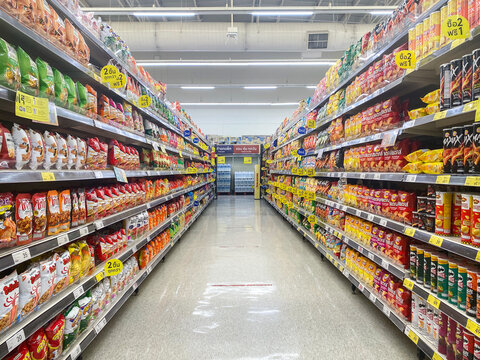
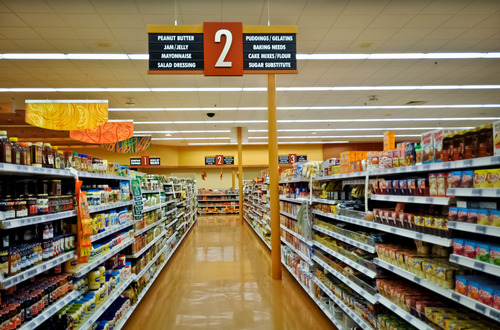
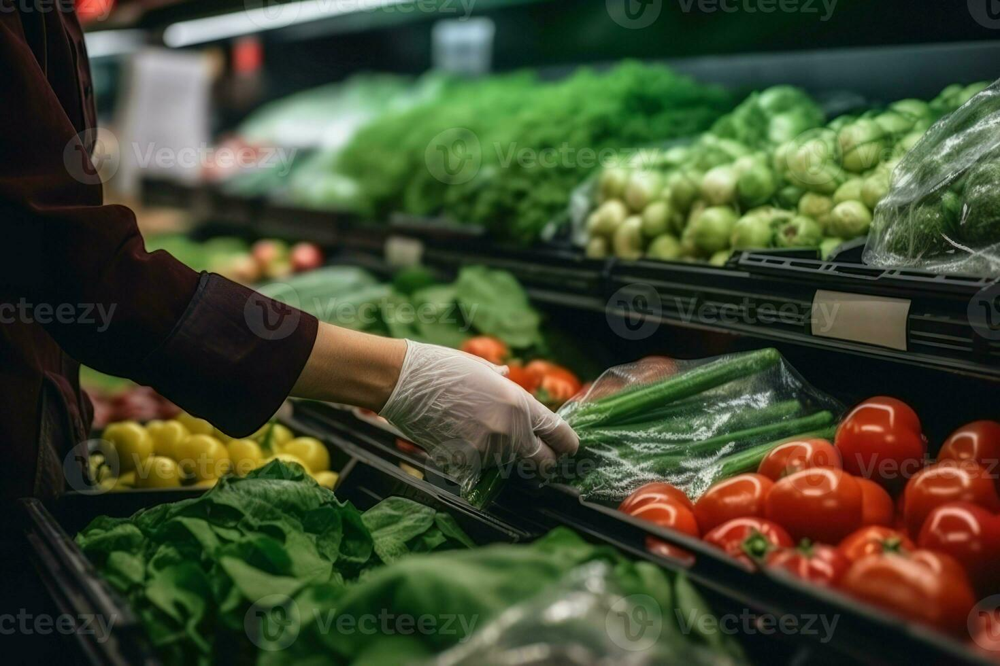
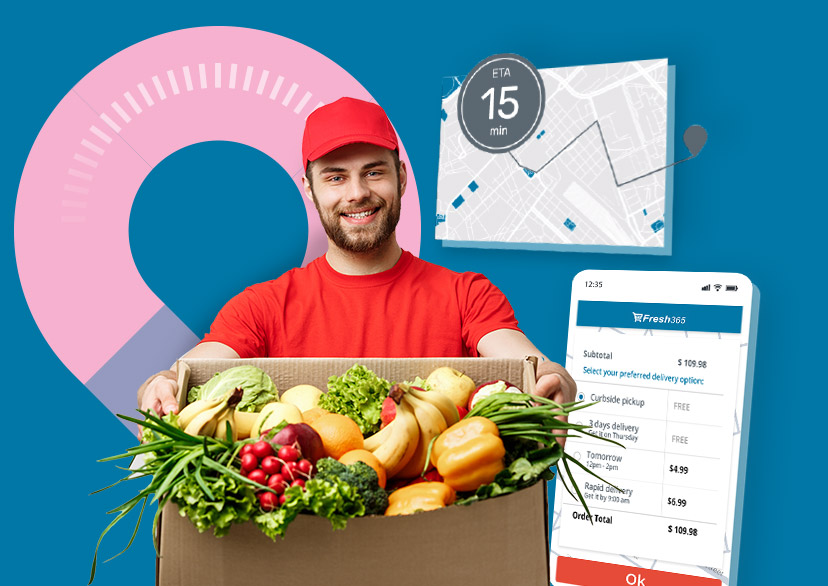
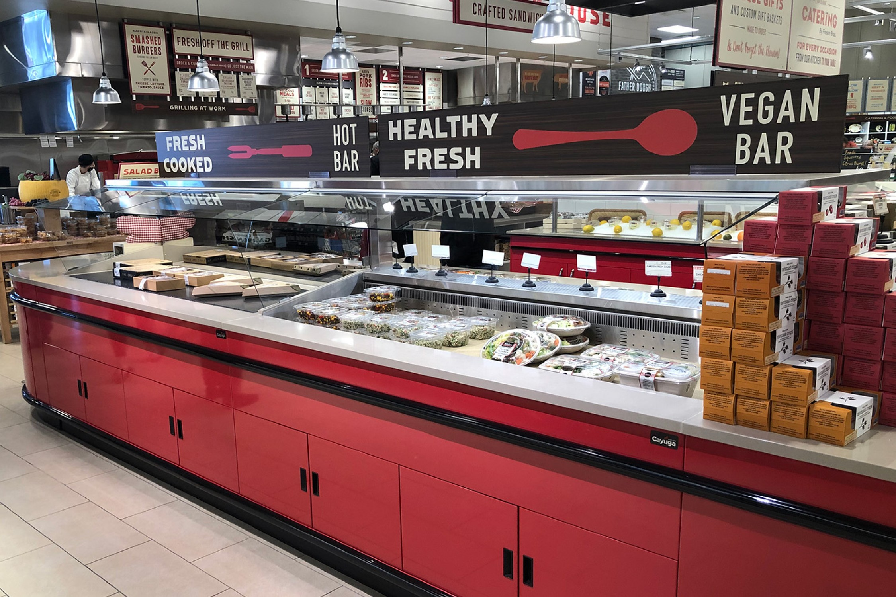
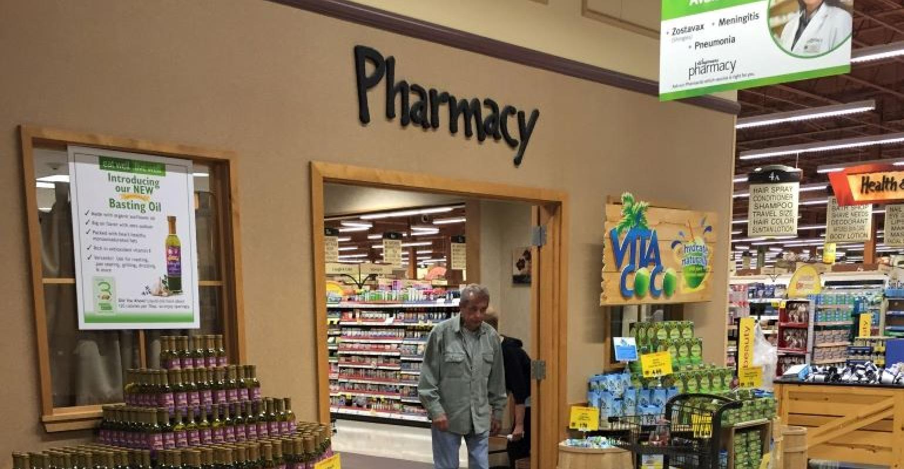
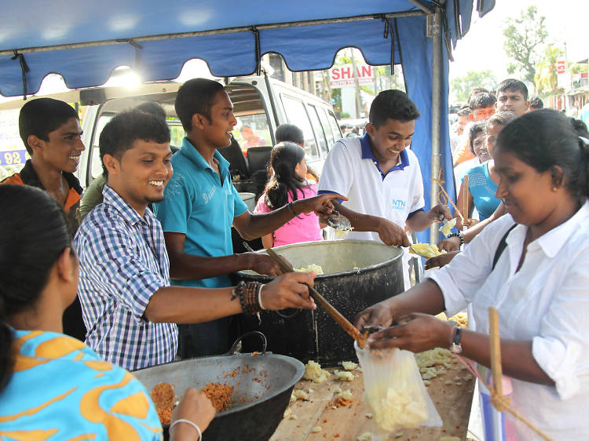

Introduction About us !
Products & Departments
  The supermarket typically has places for fresh meat, fresh produce, dairy, deli items, baked goods, and similar foodstuffs. Shelf space is also reserved for canned and packaged goods and for various non-food items such as kitchenware, household cleaners, pharmacy products and pet supplies.
- Dairy product
- Vegetables
- Frozen Foods
- Cosmetics
- Snacks
Wanna know about our Services !
  Supermarkets usually offer products at relatively low prices by using their buying power to buy goods from manufacturers at lower prices than smaller stores can. They also minimize financing costs by paying for goods at least 30 days after receipt and some extract credit terms of 90 days or more from vendors.
- Delivery
- Catering
- pharmacy
Community Services
Supporting the local community is a commendable initiative for a grocery store. Here are several ways a grocery store can contribute to and engage with the local community
- Organizing Festivals
- Educational Workshops
- Blood Donation Camps
- Local Partnerships
Special offers
- Weekend Hot Deals
- Loyalty Offers
- Week day offers